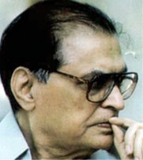

Founder
DR. RAFIQ ZAKARIA
Founder of Maulana Azad Educational Trust
Chairman
Late Dr. Mrs. Fatma Zakaria
Ex-Chairman & Ex-President MAET & MAES Awarded Padmashree - 2006
About Us
The city of Aurangabad with a glorious past was in deep slumber before the late Honorable Dr. Rafiq Zakaria (Ex. Minister and Member of Parliament) discovered it. Among many other plans, he envisioned a centre of higher learning at the site of this legendary base of learning at Rauza Bagh, Aurangabad. Maulana Azad College of Arts, Science & Commerce is the first institution on the campus which was started in June 1963. The College is situated in the large and beautiful campus with its Mughal architecture and beautifully laid gardens. Today there are two separate campuses running seventeen educational institutions. The very first task that Dr. Rafiq Zakaria faced, with his ebullient wife, Madam Fatma Rafiq Zakaria when they took up the mission, was to ensure that the new buildings, would harmonize with the old. Thus today we have a pleasing blend of medieval and modern structures including an open-air auditorium with a futuristic dome embellished with minarets, Darwazas, arches and mausoleums with their old-world charm.
Dr. Rafiq Zakaria Today the Campus at its creative best, has over 10,000 boys and girls of diverse caste, class, creed and religion, learning science & technology etc. Its hostels houses around 350 varied students from all communities reflecting unity in cultural diversity.
Dr. Rafiq Zakaria started the Maulana Azad College of Arts and Science in 1963 with the strength of just 144 students. Within a year, the Faculty of Commerce was added and later, job-oriented courses in Geology, Industrial Chemistry, Computer Application, Electronics and Microbiology were introduced. At the Junior College level, job-oriented vocational courses were introduced for the first time in the region. Today the College runs +2 level courses, undergraduate programs of BA, B.Com, B.Com (e-commerce), B.Sc., B.Sc (Bio-tech), BCA, BBA, MA and M.Sc. etc.
The college has a large and beautiful Naval Tata Stadium and the Millennium Gymnasium & Sports Complex. There is a playground and large multi-gym with modern equipment for sportsmen and sportswomen from the student and staff community. There are four spacious canteens in the compound, a large parking area with adequate security and gardens with flowering trees, herbs and shrubs on the Campus.
Maulana Azad College has become a first symbol of quality education as the National Assessment & Accreditation Council (NAAC) has granted Grade “A” (2004) which is re-acriditated in Sept. 2015 and the college is ISO 9001:2008 Certified College of the region. The College has the distinction of being the first institution to have been accredited as Grade "A" by NAAC. The college is selected by UGC for potential for excellence from 2016. This makes the Maulana Azad College very proud indeed and places on it great responsibility to carry forward a great tradition established nearly five decades ago. This is the legacy that students will carry forward with them.
Mrs. Fatma Zakaria is now leading the mission of the founder Dr. Rafiq Zakaria by putting in efforts to maintain the quality of education and training. She is now Chairman of Maulana Azad Educational Trust and President of Maulana Azad Education Society
The President of India has conferred on Mrs. Fatma Zakaria, the prestigious Padmashri Award in January 2006. The Chairman Mrs. Fatma Rafiq Zakaria is making hard efforts to enhance the quality of infrastructure by reallocating space efficiently, creating a new building, adding new facilities and making it possible for students to experience quality in computer laboratories, libraries, gym, stadium etc.
It also offers through its postgraduate and research centre various postgraduate program like MA, M.Com, M.Sc., MPM, MMS etc. the college got recognition as a research centre for Ph.D. program in subject of Chemistry, Geology, English, Hindi, Urdu, Zoology, Botany, Mathematics, Commerce & Management Science..
Gallery
.jpg)
.jpg)